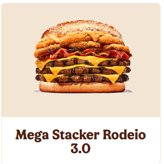
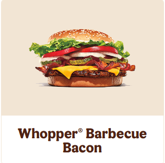
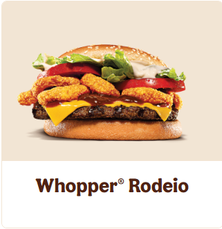

O Mega Rodeio do BK é um lanche robusto e saboroso lançado pelo Burger King, inspirado nos sabores intensos do campo e do churrasco. Ideal para quem curte um hambúrguer com personalidade, o Mega Rodeio traz dois suculentos hambúrgueres de carne grelhada no fogo como churrasco, acompanhados de fatias crocantes de bacon, generosa porção de onion rings (anéis de cebola empanados), queijo derretido e o toque especial do molho barbecue — que dá aquele sabor defumado marcante. Tudo isso é servido em um pão macio com gergelim, criando uma combinação perfeita entre crocância, cremosidade e sabor. Esse lanche é uma versão turbinada do tradicional Rodeio, um dos clássicos do BK, mas com o dobro de ingredientes e muito mais intensidade. Pensado para os amantes de hambúrgueres parrudos e fãs de sabores fortes, o Mega Rodeio é uma verdadeira explosão de sabor em cada mordida, oferecendo uma experiência gastronômica que vai além do comum.
O Rodeio 3.0 é uma versão ainda mais ousada e recheada do clássico Rodeio, trazendo uma evolução no sabor e na intensidade que conquista os fãs de hambúrgueres robustos. Esse lanche do Burger King vem com três hambúrgueres de carne bovina grelhada no fogo como churrasco, garantindo suculência e aquele sabor defumado característico da marca. Além disso, o Rodeio 3.0 é recheado com onion rings crocantes, queijo derretido e o icônico molho barbecue, que adiciona um toque agridoce e defumado irresistível. Toda essa combinação é servida em um pão com gergelim, completando a experiência com textura e sabor equilibrados. O nome "3.0" faz referência não só à quantidade de carne, mas também à evolução do lanche, que se torna uma opção perfeita para quem busca mais intensidade e saciedade. O Rodeio 3.0 é ideal para quem tem fome de verdade e quer aproveitar cada mordida com o máximo de sabor. Uma pedida potente para os amantes de hambúrgueres parrudos!
O Whopper de Bacon é uma versão especial do clássico Whopper, um dos sanduíches mais famosos do Burger King. Esse lanche traz toda a suculência do hambúrguer grelhado no fogo, combinado com fatias crocantes de bacon que adicionam um sabor defumado e uma textura irresistível. Além disso, o Whopper de Bacon é servido com alface fresca, tomates fatiados, cebolas, picles e maionese, criando um equilíbrio perfeito entre frescor e sabor marcante. O pão macio com gergelim completa a composição, garantindo que cada mordida seja saborosa e bem estruturada. O molho barbecue, presente em algumas versões, realça ainda mais o sabor defumado do bacon, fazendo do Whopper de Bacon uma opção ideal para quem gosta de um hambúrguer robusto, cheio de personalidade, mas sem abrir mão da qualidade e do frescor dos ingredientes. É uma escolha certeira para os fãs de bacon e sabor intenso.
O Whopper Rodeio é uma combinação perfeita entre o clássico sabor do Whopper e a pegada defumada do molho barbecue com onion rings crocantes. Esse lanche do Burger King traz o tradicional hambúrguer grelhado no fogo, que garante aquela suculência e sabor característicos, acompanhado de fatias crocantes de bacon, queijo derretido, molho barbecue e as famosas onion rings — anéis de cebola empanados que dão uma textura crocante e sabor especial. Tudo isso é servido no pão macio com gergelim, mantendo o equilíbrio entre os ingredientes e realçando cada elemento do sanduíche. O Whopper Rodeio é ideal para quem quer um hambúrguer mais robusto e cheio de sabor, combinando o melhor do churrasco com a crocância das onion rings e a intensidade do molho barbecue. Uma escolha perfeita para quem busca uma experiência saborosa e autêntica, com aquele toque especial do campo e da tradição rodeio.